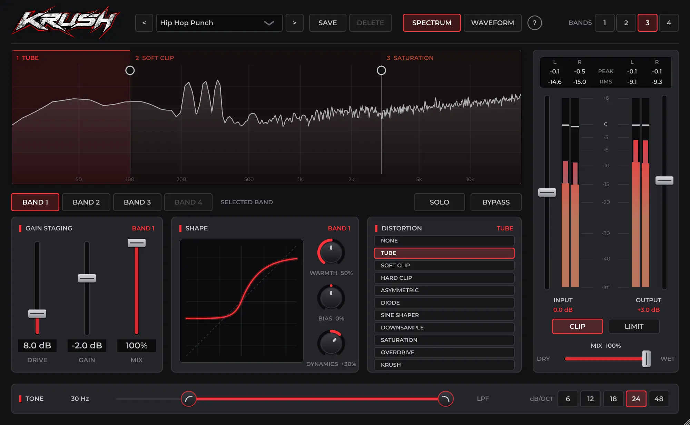
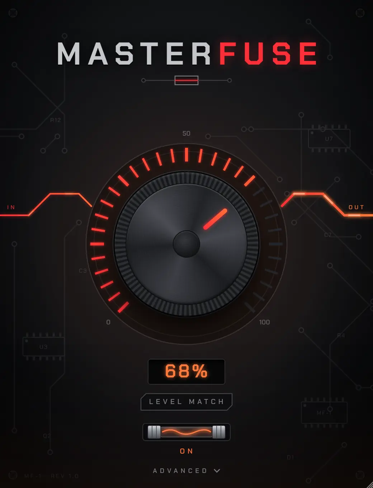

Tube
Shape: WARMTH
Smooth, warm saturation. The negative half compresses earlier, adding even harmonics.
Multiband distortion
Split the sound into up to four bands and distort each one its own way: warm the lows, grind the mids, fizz the top. Drag the crossovers right on the spectrum.
Free · Windows: .zip with the VST3 and the app · macOS: installer with AU, VST3 and the app, for Apple Silicon and Intel
User manual (PDF) Want them all? Get the full suite of 7
Hear it
Same clips on every plugin page. Before and after play at the same loudness, so you hear the character, not a volume jump.
Overview
KRUSH is a multiband distortion. It splits the sound into up to four frequency bands and gives each band its own distortion, so you can drive the mids hard while the sub stays clean, or add bite to the top without muddying the low end.
Each band has eleven distortion modes, from smooth tube and tape to sine folding, bitcrushing and the signature Krush curve, plus DRIVE, SHAPE, BIAS and a DYNAMICS control that brings back the punch distortion usually flattens. The bands are split with steep Linkwitz-Riley crossovers, and everything runs at 4× oversampling to keep aliasing down.
Good for
Quick start
Reference
How many bands the sound is split into. 1 is no split.
Drag the round handles on the spectrum to move the split points; double-click one to reset it. The crossovers are 24 dB/octave Linkwitz-Riley, so the bands add back up flat.
Click a band (on the tabs or on the spectrum) to edit it. The panels below show that band's settings.
The kind of distortion for this band. See the modes below.
How hard the band hits the distortion. In Downsample mode it lowers the sample rate.
Changes with the mode, and its label changes too: WARMTH, KNEE, FOLDBACK, ASYMMETRY, THRESHOLD, FOLDS, BITS, SOFTNESS, GRIT or GNARL.
Shifts the signal off-centre before the distortion, so the two halves of the wave clip differently. Adds even harmonics.
How much of the band's transients gets through. Above 0 brings back the punch distortion flattens; below 0 smooths the hits out.
The band's level after the distortion.
Blends this band's distortion with its clean signal.
SOLO plays only this band (and other soloed bands). BYPASS passes the band through clean.
Level into KRUSH and final level.
Blends the whole distorted signal with the clean input.
A high-pass and low-pass filter on the distorted sound (the clean part of MIX is not filtered).
How steep the TONE filters are.
Soft-clips the output so the sample peaks never go above −0.1 dBFS.
A clean look-ahead limiter that keeps the sample peaks at or below −0.1 dBFS.
The spectrum of the output with the bands drawn over it, or a scrolling waveform (input grey, output red).
The distortion curve of the selected band: quiet input in the middle, loud input at the edges.
Turns the help pop-ups on or off. Hover any control to see what it does.
Every plugin window scales from 60% to 200%: drag the bottom-right corner. Double-click a knob to return it to its default.
Modes
Each band picks one mode. SHAPE changes its name and job with the mode.
Shape: WARMTH
Smooth, warm saturation. The negative half compresses earlier, adding even harmonics.
Shape: KNEE
Rounds peaks off smoothly. SHAPE sets the knee, from very soft to firm.
Shape: FOLDBACK
Flat-tops everything above the ceiling. SHAPE folds the peaks back down for a harsher, buzzier edge.
Shape: ASYMMETRY
Hard clipping on the top half, soft compression on the bottom half.
Shape: THRESHOLD
A single-diode clipper. The top half clips sharply, the bottom stays open.
Shape: FOLDS
Wave folding through a sine curve. Loud signals fold over into bright, metallic overtones.
Shape: BITS
Sample-rate reduction and bit crushing. DRIVE lowers the sample rate, SHAPE lowers the bit depth.
Shape: SOFTNESS
Tape-like, gentle and smooth. SHAPE makes it softer and more compressed.
Shape: GRIT
A pedal-style curve with a firm top. SHAPE makes the knee sharper.
Shape: GNARL
The signature mode: a hot, lopsided saturation that folds back on itself and is partly rectified, so it snarls with octave-up grit even on quiet parts.
No distortion. The band passes through clean; its GAIN and MIX still work.
Presets
Click SAVE to store your own. They are kept in %APPDATA%\KRUSH\Presets on Windows and ~/Library/Application Support/KRUSH/Presets on a Mac, so you can back them up or share them.
Tips
Install
Open the downloaded .zip. Inside is the plugin (.vst3) and a standalone app.
Move the .vst3 to C:\Program Files\Common Files\VST3. Every Windows DAW looks there.
Let your DAW scan for new plugins. The plugin shows up under Noise Division.
Windows 10 or 11, 64-bit. VST3 host or the standalone app.
Double-click the .pkg. It installs the Audio Unit, the VST3 and the standalone app.
Open System Settings, Privacy & Security, scroll down and click Open Anyway. This shows once, because the installers aren't from the App Store.
Logic and GarageBand find the AU on their next start. Ableton Live, FL Studio, Reaper, Bitwig and Studio One use the VST3.
macOS 10.13 or newer, Apple Silicon or Intel. AU or VST3 host, or the standalone app.
Installation, every control, modes, presets, tips and troubleshooting in one PDF to keep next to your DAW.
Help
Distortion adds level. Lower each band's GAIN or the OUTPUT, or turn on CLIP or LIMIT.
Check SOLO on other bands and BYPASS on this one.
Check the .vst3 is in C:\Program Files\Common Files\VST3 (Windows) and rescan. On a Mac, run the installer again and restart the DAW.
Rescan with Verify plugins ticked in the plugin manager.
System Settings, Privacy & Security, Open Anyway. The installers aren't signed with an Apple developer certificate yet.
Click More info, then Run anyway. This only concerns the standalone app.
Drag the bottom-right corner. Every plugin scales from 60% to 200% and remembers the size.
E-mail noisedivision@proton.me with the plugin name, version, your DAW and your operating system.
More from Noise Division

Precision sidechain

Soft clipper

One-knob mastering

Spectral compressor

One-knob darkener

Spectral distortion
Support
Everything here is free and stays free. If a plugin made it into your tracks and you want to say thanks, a donation pays for the time that goes into new plugins and updates.